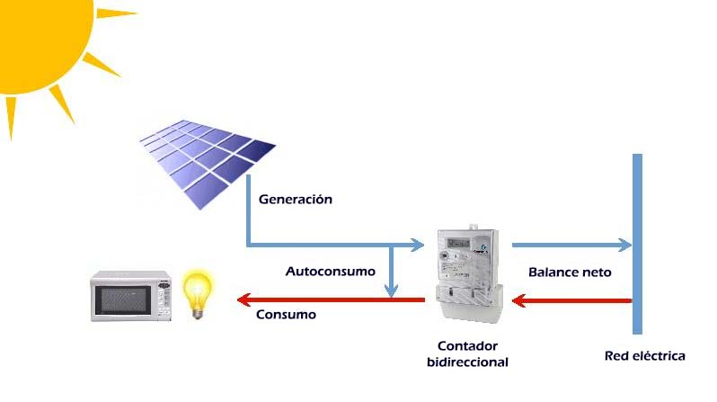
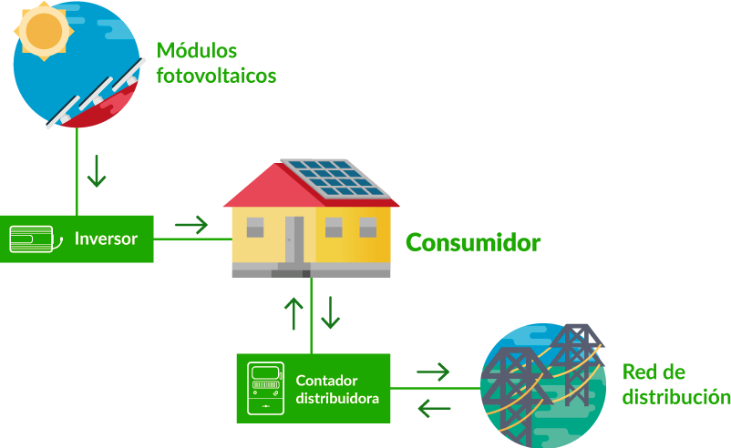

¿Qué és el autoconsumo?
El autoconsumo es una manera de producir tu propia energía eléctrica para el consumo personal en la vivienda. En el caso del autoabastecimiento fotovoltaico solar, la energía se genera mediante placas solares.
Aprovechar la energía solar es una opción cada vez más común, ya que la tendencia es dirigirnos hacia una energía verde, sin necesidad de explotar los recursos naturales no renovables como el carbón o el petróleo.
La solución es muy popular en España, puesto que en nuestro país contamos con aproximadamente 300 días de sol de 365, lo que significa una producción de energía casi ininterrumpida a lo largo del año.
Además, contamos con una irradiación solar alta, lo que significa que la capacidad de producción es superior comparada con otras zonas de Europa, por ejemplo Alemania u Holanda, donde el autoconsumo residencial tiene mucha mayor penetración que en España, a pesar de tener muchas menos horas de sol.
Las viviendas pueden garantizar un precio del kWh estable, incluso en tiempos de incertidumbre, o cuando nos encontramos con nuevos conceptos como el “tope al gas”.
En resumen, estas son las principales ventajas del autoconsumo solar:


Aprovechar la energía solar es una opción cada vez más común, ya que la tendencia es dirigirnos hacia una energía verde, sin necesidad de explotar los recursos naturales no renovables como el carbón o el petróleo.
La solución es muy popular en España, puesto que en nuestro país contamos con aproximadamente 300 días de sol de 365, lo que significa una producción de energía casi ininterrumpida a lo largo del año.
Además, contamos con una irradiación solar alta, lo que significa que la capacidad de producción es superior comparada con otras zonas de Europa, por ejemplo Alemania u Holanda, donde el autoconsumo residencial tiene mucha mayor penetración que en España, a pesar de tener muchas menos horas de sol.
Las viviendas pueden garantizar un precio del kWh estable, incluso en tiempos de incertidumbre, o cuando nos encontramos con nuevos conceptos como el “tope al gas”.
En resumen, estas son las principales ventajas del autoconsumo solar:
Produce tu propia energía
Colabora en hacer un mundo más sostenible
Ahorra en tus recibos
Aumenta el valor de tu vivienda o negocio
¿Cómo funciona el autoconsumo solar?
Una de las ventajas de las instalaciones de autoconsumo es su sencillez..
Las placas solares obtienen la energía del Sol y la transforman en energía eléctrica.
La corriente continua producida es transformada en corriente alterna por el inversor solar. Esta energía se utiliza para el autoabastecimiento de la vivienda..
La corriente continua producida es transformada en corriente alterna por el inversor solar. Esta energía se utiliza para el autoabastecimiento de la vivienda..

Tipos de autoconsumo solar
Existen varios tipos de autoconsumo solar, dependiendo de la ubicación en la que está instalado el sistema o si está conectado a la red eléctrica o no. Veamos sus características...
Residencial conectado o aislado
El autoconsumo residencial se divide en autoconsumo conectado a la red o aislado (que está desconectado de la red). También podemos hablar de autoconsumo con excedentes vertidos a la red o sin ella.En el caso del autoconsumo conectado a la red, la instalación tendrá dos conexiones: una al sistema eléctrico de la vivienda y otra a la red de distribución, propiedad de una compañía eléctrica.
El autoconsumo aislado, por otra parte, supone la desconexión total de la red de distribución. Esta segunda opción implica que, si no existen baterías o almacenamiento de energía, la vivienda no tendrá energía eléctrica. Es más, muchas veces las baterías no son suficientes y en estos casos será necesario contar con un generador eléctrico. Todo esto supone más inversión para el cliente y más riesgo para el cliente de quedarse sin electricidad, frente a quedarse conectado a la red.
¿Qué pasa con el excedente de energía producido en estas dos situaciones?
En el caso del autoconsumo conectado, la energía se puede verter en la red, obteniendo una compensación por los excedentes.
Si la instalación es aislada, la energía se puede almacenar en baterías y el propietario puede disponer de ella en cualquier momento.
Dependiendo de las necesidades y qué busca cada propietario de vivienda, se puede optar por una u otra. Eso sí, hay que tener en cuenta que en períodos de baja producción fotovoltaica, la energía almacenada puede no ser suficiente para el abastecimiento de la casa. Por eso, recomendamos mantener la vivienda conectada a la red eléctrica.
También puede optar por una instalación conectada sin compensación de excedentes, pero esta opción no ayuda a maximizar la rentabilidad del sistema.
Autoconsumo individual o compartido
Si hablamos de tipos de instalaciones de autoabastecimiento, también cabe mencionar que pueden ser para uso individual o para uso compartido.El autoconsumo compartido, como también indica su nombre, es cuando en la misma instalación están conectadas varias viviendas o una comunidad de vecinos. Este tipo de instalaciones son menos comunes, puesto que la medición del consumo de cada vivienda es complicada.
En las comunidades de vecinos donde existe un sistema instalado, se suele utilizar para zonas comunes como los pasillos del edificio, garajes o motores para la piscina. Por otro lado, el autoconsumo individual es el que abastece a las viviendas unifamiliares.
Industrial o para empresas
El autoconsumo industrial es una opción que consideran cada vez más empresas..El funcionamiento de las mismas no varía y, al igual que en el caso residencial, las empresas se benefician de importantes ahorros en las facturas.
Las instalaciones fotovoltaicas para empresas se diferencian de las residenciales principalmente por su tamaño, que suele ser muy superior. Por otro lado, el consumo energético suele ser en horarios de día, a diferencia de una vivienda donde se crean patrones de consumo de energía a lo largo del día..
¿Cuáles son los elementos de un sistema de autoconsumo solar?
Ahora que conoce qué es, cómo funciona y cuáles son los tipos de instalaciones de autoconsumo, conviene repasar los elementos que forman estos sistemas. Básicamente son estos 4:
Además de esto, se puede contar con otros elementos como: optimizadores de potencia o baterías de almacenamiento.
También se puede optar por incluir otros dispositivos como cargadores de vehículos eléctricos.
- Los paneles solares
- El inversor solar
- La estructura de soporte
- El cableado

Además de esto, se puede contar con otros elementos como: optimizadores de potencia o baterías de almacenamiento.
También se puede optar por incluir otros dispositivos como cargadores de vehículos eléctricos.
Subvenciones para el autoconsumo
Europa tiene por objetivo pasar a una energía más limpia. Como parte de la transición energética, el autoconsumo es uno de los elementos más importantes que pueden fomentarla.
Para apoyar el autoconsumo, se pueden obtener las siguientes subvenciones para placas solares:
Además de las ayudas que se puede obtener por la instalación fotovoltaica, la compensación de excedentes también suma a la rentabilidad del autoconsumo.
Para apoyar el autoconsumo, se pueden obtener las siguientes subvenciones para placas solares:
- Bonificaciones en el IBI
- Bonificacions del ICIO
- Deduccions en el IRPF
- Deducciones autonómicas
- Deducciones estatales
Además de las ayudas que se puede obtener por la instalación fotovoltaica, la compensación de excedentes también suma a la rentabilidad del autoconsumo.